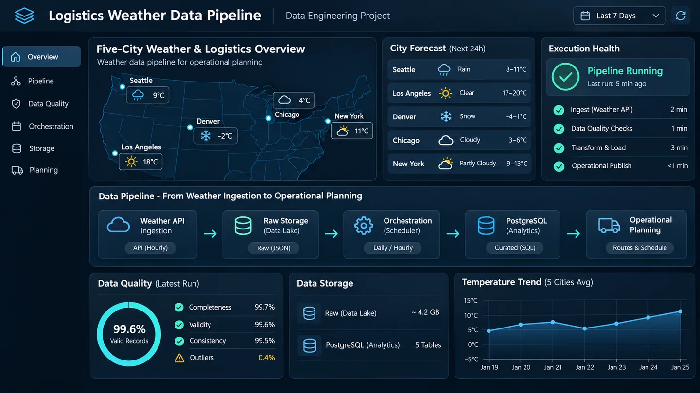

As-Is
- Chamadas pontuais e sem histórico controlado.
- Baixa capacidade de reprocessamento.
- Ausência de trilha por batch e execução.
Cria histórico meteorológico confiável para análises operacionais reproduzíveis, preservando origem, integridade e trilha de execução.

IMAGEM CONCEITUAL · NÃO É TELA FUNCIONALUma análise meteorológica só é útil para operações quando a origem, o momento da captura, a integridade e as transformações do dado podem ser explicados. Consultas isoladas à API não oferecem histórico, repetibilidade ou base confiável para consumo posterior.
Extração da Open-Meteo com Python, validações de esquema e conteúdo, tentativas HTTP, persistência Raw imutável e trilha de batch/run. A infraestrutura utiliza Docker e Airflow, enquanto a etapa atual consolida o PostgreSQL como Data Warehouse local.
As métricas demonstram cobertura, qualidade e reprodutibilidade do pipeline; não representam ganho empresarial.